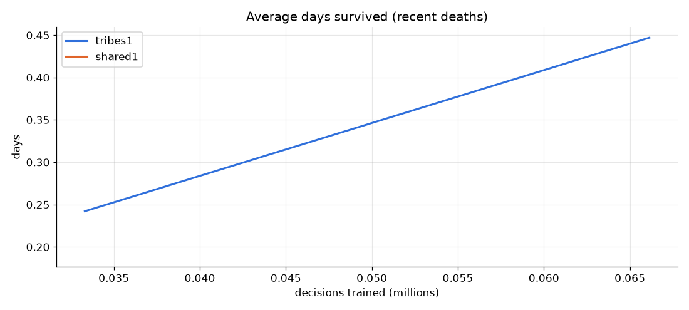
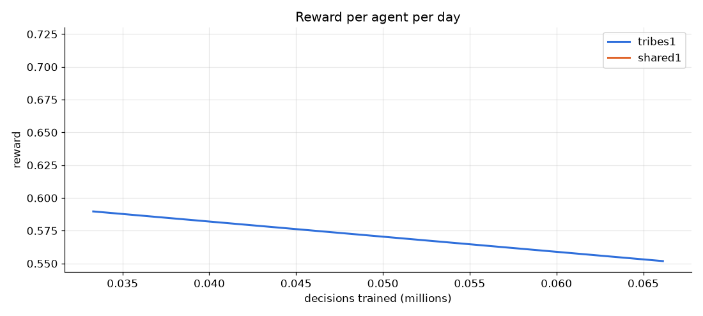
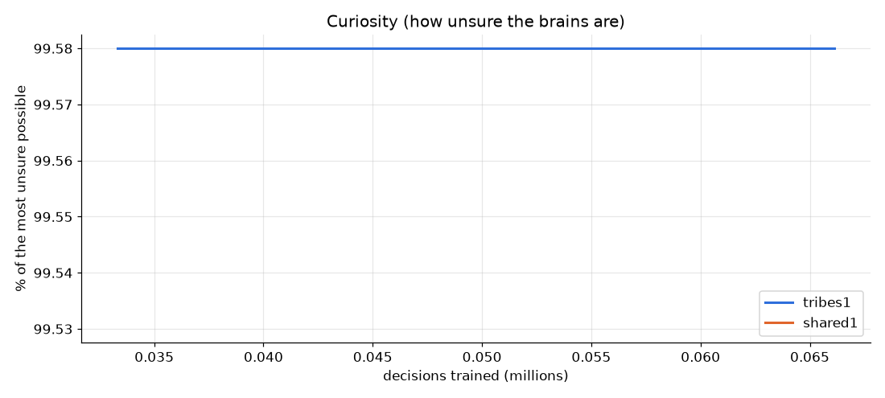
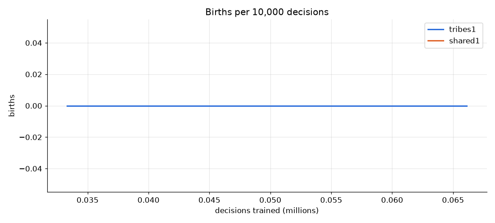
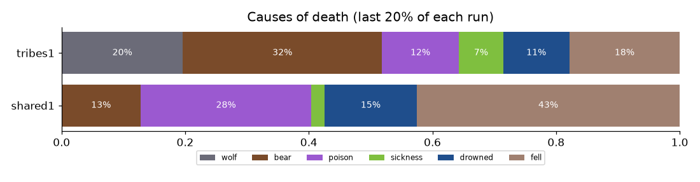
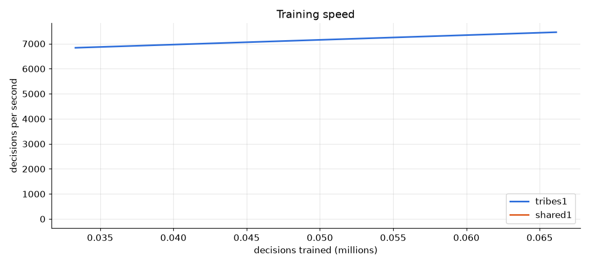

Comparison of training runs: tribes1 vs shared1
- tribes1 (round 2, 4 brain(s)): 0.1 million decisions; last 10%: survived 0.45 days on average, reward/day 0.55, curiosity 100%
- shared1 (round 1, 1 brain(s)): 0.0 million decisions; last 10%: survived 0.19 days on average, reward/day 0.72, curiosity 100%





